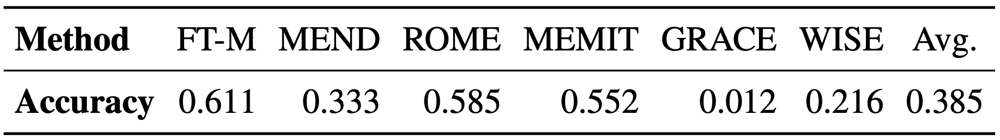

Satisfactory Advances of Model Editing
Table 1: Evaluation results of mainstream model editing techniques on benchmark datasets, as reported in "A Comprehensive Study of Knowledge Editing for Large Language Models".
Recent works report near-perfect results of model editing techniques on corresponding benchmarks, suggesting substantial progress toward efficient and effective update of LLMs. However, these results often come from synthetic, oversimplified evaluation settings (e.g., identical prompts for editing and testing) that may fail to capture real-world complexities. This disparity raises a critical question: Can these promising results in the literature translate to practical applications?
Evaluate Editing in the Wild

Figure 1: Illustration of QAEdit pipeline to evaluate model editing in real-world QA.
To rigorously examine the practical utility of model editing, we focus on the most fundamental and widely studied task of QA for two reasons: i) They offer clear evaluation criteria and broad applicability; ii) If current editing methods struggle on basic QA tasks, then they are unlikely to succeed in more challenging scenarios. Specifically, we apply editing methods to correct LLMs' errors in QA tasks and assess the improvement by re-evaluating edited LLMs on a standard QA evaluation framework (lm-evaluation-harness), as illustrated in Figure 1.
Table 2: Accuracy of edited Llama-2-7b-chat on questions it failed before editing in QAEdit.
As shown in Table 2, state-of-the-art editing methods achieve only 38.5% average success rate under QA evaluation, far below previously reported results. Considering that QAEdit is derived from real QA datasets and assessed by standard QA evaluation, different from mainstream synthetic editing benchmarks and evaluation, this raises a critical question: Is the performance degradation attributed to the real-world complexity of QAEdit, or to real-world QA evaluation?A Tale of Two Evaluations
Figure 2: Comparison between synthetic and Wild evaluation frameworks.
Table 3: Key settings of synthetic and Wild evaluation across all four modules.
To identify the cause of this performance gap and guide further investigation, we first delve into the experimental setup of both editing (synthetic) and QA task (Wild) evaluations. We abstract them into four key modules: input, generation strategy, output truncation, and metric. This modular paradigm enables systematic comparison between the two evaluation frameworks, as shown in Figure 2. And Table 3 details the key differences between these evaluation frameworks.
We formalize the evaluation pipeline commonly used in prior model editing works as synthetic evaluation framework: i) input: using only question without additional context; ii) generation strategy: employing teacher forcing to feed ground truth tokens as input during decoding; iii) output truncation: truncating output to match the length of target answer; iv) metric: using token-level match ratio between the target and generated answer as accuracy.
We propose the Wild (Without Intervention, Live Decoding) evaluation framework based on the standard QA evaluation protocol: i) input: prefixing question with contexts like task instructions; ii) generation strategy: adopting autoregressive decoding, where each output serves as input for subsequent generation; iii) output truncation using predefined stop tokens (e.g., ".", "\n", and "<|endoftext|>") as signal to terminate generation; iv) metric: Wild supports evaluation metrics, including BERTScore and exact match (EM). Given its popularity and alignment with human judgment, we adopt LLM-as-a-Judge as the primary metric to illustrate the framework and conduct our study.
Benchmark & Evaluation Analysis
Table 4: Comparison between synthetic evaluation (syn.) and Wild evaluation (Wild).
Benchmark Perspective: QAEdit exhibits moderately lower editing reliability compared to ZsRE and CounterFact, reflecting its diverse and challenging nature as a real-world benchmark. However, this modest gap is insufficient to explain the significant discrepancy observed in our earlier analysis.
Method Perspective: i) Recent state-of-the-art methods, GRACE and WISE, exhibit the most significant decrease, with both reliability and generalization dropping below 5%. ii) In comparison, traditional methods like FT-M and ROME exhibit superior stability and preserve a certain level of effectiveness in Wild evaluation.
Evaluation Perspective: i) Performance on each benchmark drops sharply from synthetic evaluation (~96%) to Wild evaluation (e.g., 43.8% on ZsRE and 38.9% on QAEdit), indicating that synthetic evaluation substantially overestimates the effectiveness of editing methods. ii) Unlike synthetic evaluation, which reports uniformly high scores, Wild differentiates methods effectively, providing valuable insights for future research.
Controlled Study of Evaluation
Figure 3: Controlled study on generation strategy.
Generation Strategy: Teacher forcing prevents error propagation by feeding ground truth tokens as input, artificially elevating the performance.
Figure 4: Controlled study on output truncation.
Output Truncation: Irrational truncation in synthetic evaluation masks subsequent errors, resulting in inflated performance. Under natural stop criteria, edited models typically generate additional errors, as shown in Figure 5.
Table 5: Additionally generated content beyond ground truth length under natural stop criteria.
(Sequential) Editing in the Wild
Table 6: Sequential editing results on QAEdit under synthetic (syn.) and Wild (Wild) evaluations .
Although our analysis via single editing reveals limitations in synthetic evaluation, such isolated editing fails to capture the continuous, large-scale demands of editing in real-world scenarios. Therefore, We now address our primary research question: testing model editing under Wild evaluation via sequential editing, a setup that better reflects practical requirements. We keep previously adopted setup, but limit to 1000 samples, as existing methods perform significantly worse with more edits. The results in Table 6 reveal that in Wild evaluation with sequential editing, all methods except FT-M exhibit nearly unusable performance (only 9.3% average reliability), with FT-M achieving a 40.5% average reliability.
Figure 5: Reliability evolution of sequential editing on Llama-3-8b, with repeated evaluation of previous batches after each new edit batch (batch size = 20).
To gain insights into the poor final performance, we also investigate how editing effectiveness changes during continuous editing. Specifically, we randomly partition 100 QAEdit samples into 5 batches of 20 samples each. Using MEMIT on Llama-3-8b, we iteratively edit each batch while evaluating the edited model on each previously edited batch separately to track dynamics of editing effectiveness. The results depicted in Figure 5 reveal the key challenges of sequential editing: progressive loss of previously edited knowledge coupled with decreasing effectiveness in incorporating new knowledge, highlighting that lifelong model editing is still an open challenge.
BibTeX
@misc{yang2025revisitediting,
title={The Mirage of Model Editing: Revisiting Evaluation in the Wild},
author={Wanli Yang and Fei Sun and Jiajun Tan and Xinyu Ma and Qi Cao and Dawei Yin and Huawei Shen and Xueqi Cheng},
year={2025},
eprint={2502.11177},
archivePrefix={arXiv},
primaryClass={cs.CL},
url={https://arxiv.org/abs/2502.11177},
}